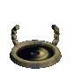
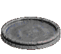
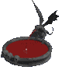
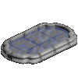
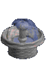

SHRINES & WELLS
While scouring the labyrinth beneath Tristram you will come across several types of environmental objects like the ones in the pictures below. Unlike in the original Diablo, here in Diablo 1 HD mod all of them grant only beneficial effects, albeit most are just temporary.
(Cathedral & Catacomb) Shrine (Catacomb) Goat Shrine  (Cave & Hell) Cauldron
| ABANDONED | 5 minutes | Dexterity increase (5 + Character Level/2) |
|---|---|---|
| CREEPY | 5 minutes | Strength increase (5 + Character Level/2) |
| CRYPTIC | instant | Full Mana replenish + casts Nova (hostile to players) |
| DIVINE | instant | Full Life & Mana replenish + 1 Full Life Potion & 1 Full Mana Potion (OR 2 Full Rejuvenation Potions) |
| EERIE | 5 minutes | Magic increase (5 + Character Level/2) |
| ELDRITCH | instant | Life & Mana Potions on belt and in personal inventory transform into Rejuvenation Potions |
| ?EXPERIENCE | 5 minutes | Experience boost () |
| FIRE PROTECTION | 10 minutes | Fire Resistance increased (Character Level + 25%) |
| GLIMMERING | instant | Identifies all items on self and in personal inventory |
| HOLY | instant | Casts Phasing (teleports player at a random spot) |
| LIGHT | 5 minutes | Haste (+25% Attack & Cast Speed, +10% Walk Speed) |
| LIGHTNING PROTECTION | 10 minutes | Lightning Resistance increased (Character Level + 25%) |
| LORE | 5 minutes | +2 levels to all available Spells |
| MAGIC PROTECTION | 10 minutes | Magic Resistance increased (Character Level + 25%) |
| MAGICAL | 30 minutes | Mana Shield (100% Damage Absorbed by Mana) |
| ?MASTERY | 5 minutes | Combat Skill (+ Physical Damage , +% Chance to Hit) |
| MEDITATING | 5 minutes | Mana regeneration improved (Character Level/2) |
| MYSTIC | instant | Casts Town Portal |
| ?PROTECTION | 5 minutes | Armor enhanced (+ Armor Class, +% Physical Resistance) |
| QUAIET | 5 minutes | Vitality increase (5 + Character Level/2) |
| RELIGIOUS | instant | Repairs all items on self and in personal inventory |
| SECLUDED | instant | Reveals map of current labyrinth level |
| SPIRITUAL | instant | Gold appears in all unoccupied space of personal inventory |
| ?SPOOKY | instant | Full Life & Mana replenish |
| STONE | instant | Recharges Staves on self and in personal inventory |
| THAUMATURGIC | instant | Shrines/Chests/Barrels/Decapitated Bodies on the current labyrinth level can be touched again |
Murky Pool  Blood Fountain  Purifying Spring  Fountain Of Tears 
| MURKY POOL | 10 minutes | Casts Infravision (monsters out of visual range gain red overlay) |
|---|---|---|
| BLOOD FOUNTAIN | unlimited | +1 Life replenished (each time you touch it) |
| PURIFYING SPRING | unlimited | +1 Mana replenished (each time you touch it) |
| ?FOUNTAIN OF TEARS | 5 minutes | Randomly swaps 2 base attributes (-Character Level to one attribute & +Character Level to other attribute) |